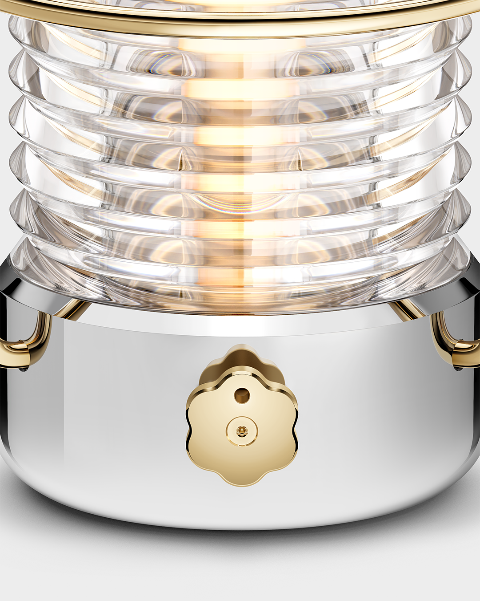
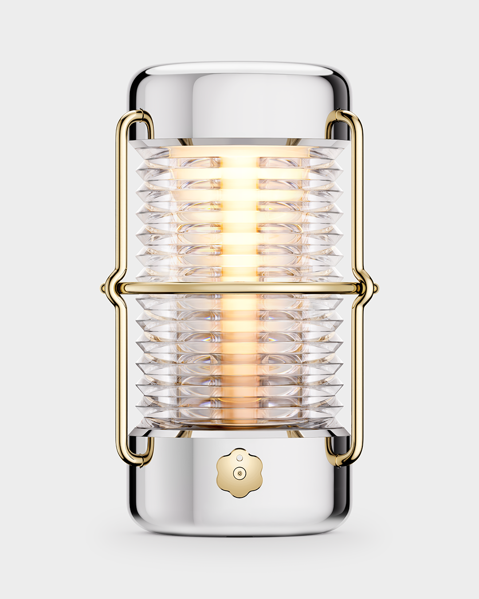
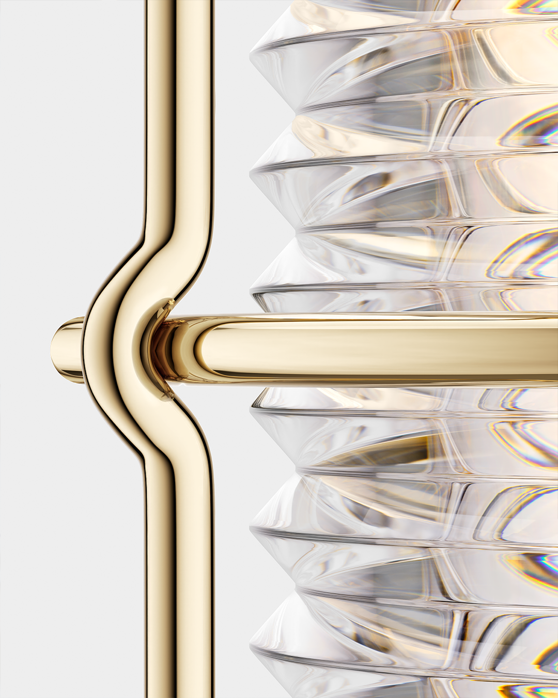
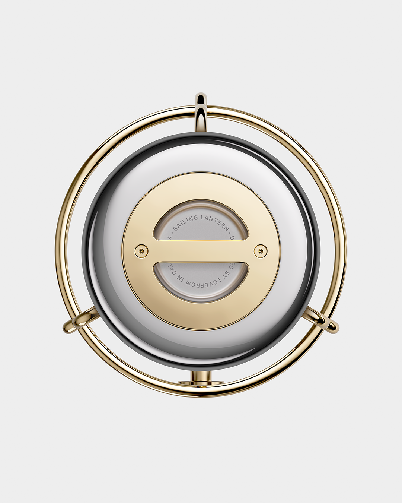

Design Report · 2026
Sailing Lantern
A $4,800 portable light by Jony Ive's LoveFrom and BALMUDA of Tokyo. Two years in the making. One thousand pieces, now shipping worldwide. A look at the object the press has struggled to describe in the language of consumer goods.
Considered
The Sailing Lantern arrived without a press release — it had, instead, several. Wallpaper* called it "alive" in the hand. Dezeen described "the warmth and emotional resonance of a live flame." Boat International ran an interview in which Sir Jony Ive said simply: "I would have just bought a lantern for my yacht — I wanted to. But there isn't anything on the market."
What was made instead, over two years between LoveFrom and Gen Terao's team in Tokyo, is an object that reviewers have struggled to describe in the language of consumer goods. They reach, instead, for vocabulary more often used about furniture, watches, and tools that outlast their first owner. "Materials were chosen for integrity and longevity," the announcement read in 9to5Mac — flawless precision-ground glass, mirror-polished stainless steel, an 18K gold-plated brass cage. The lantern is rated IP67, runs 150 hours on a single charge, and is built to be opened, repaired, and re-glassed.
It is not, by design, in conversation with flashlights. A flashlight produces more lumens for less than fifty dollars. The Sailing Lantern produces, in Ive's phrasing to Wallpaper*, a sensation: "If you hold it, it just feels right. And with the movement on a boat, it feels so alive." What buyers are paying for is the object itself — to be carried from one room to another, set on a desk or a deck, used softly and often, and, when its time eventually comes, passed on.
Gen Terao, speaking to the same magazine, put the maker's side plainly: "The level of precision and polish that he wanted was something I'd never come across before."
A thousand are being made. They are beginning to arrive.
The Object

A portable light, designed — in Hypebeast Japan's description — as "a marriage of classical maritime engineering and the modern technology of the LED." Two LEDs, one warm and one cool, are balanced by a single dial that controls both brightness and colour temperature. The body is precision-machined stainless steel; the lens is hand-polished glass; the frame is brass, plated in 18K gold.
It is rated IP67 against water and dust, runs 150 hours on a single USB-C charge, and weighs 1.5 kilograms. WIRED Japan's long feature, in describing the level of internal finish that goes unseen by the user, used the word 狂気 — madness — for the precision involved.
It is, quietly, here.
Origin
By Sir Jony Ive's own account, the project began with a question, not a brief. In an interview with Boat International, he put it bluntly:
"I would have just bought a lantern for my yacht — I wanted to. But there isn't anything on the market. So instead, I spent two years hard at work designing it."
— Boat International, September 2025
Pen Online, in its Japanese-language coverage, distilled the same sentiment to seven characters: 「ただ、自分が欲しいから」 — simply because I wanted it myself.
The collaboration with BALMUDA, the Tokyo-based maker known for the precision of its appliances, reportedly began with an unexpected email in January 2024. From that exchange came two years of work between LoveFrom and Gen Terao's team. Speaking with Wallpaper*, Terao described the brief he received:
"The level of precision and polish that he wanted was something I'd never come across before."
— Gen Terao, in Wallpaper*, September 2025
The result, Ive told the same magazine, is an object that "feels so alive."
Materials

"Materials were chosen for integrity and longevity."
— from the announcement, as quoted by 9to5Mac.
The list, which several reviewers reproduced in full, runs as follows.
Stainless Steel
Precision-machined and mirror-polished. Marine-grade. Treated to withstand salt air, oil, and ultraviolet exposure.
Glass
Hand-polished, faceted to refract and disperse the LEDs into a soft, candle-like glow. Hypebeast Japan noted the lineage explicitly: the geometry borrows from the Fresnel lenses of classical maritime lighting, reinterpreted for LED.
Brass Lens Guard
Finished in 18K gold plating. Designed, in the press release's phrasing, "to age, not fade."
Lanyard
Textured polyester, woven to resist salt, sun, and oil. Replaceable.
What several reviewers picked up on, beyond the spec sheet, was the build philosophy. Pen Online singled it out: the lantern is "designed to last a lifetime, with disassembly and repair built in" — accessible components, replaceable battery, re-glassable lens, and, when its time eventually comes, returnable to its raw materials.
Coverage
Reporting on the Sailing Lantern, in approximate order of publication: Wallpaper*, Dezeen, Boat International, 9to5Mac, and Financial Times / How To Spend It (September 2025); Pen Online and Hypebeast Japan (October 2025); WIRED Japan (December 2025); and Nikkei xTrend (January 2026).
A Light, Not for Lumens

WIRED Japan, in its long feature, framed the object bluntly: this device illuminates not space, but time. A modern flashlight produces more lumens for less than fifty dollars. By the consensus of the press coverage, the Sailing Lantern is not in conversation with flashlights.
What reviewers describe instead is a small, slow object — set on a table, carried from one room to another, placed on the deck of a sailing boat as the sun fades. Dezeen reached for the obvious analogy: "the warmth and emotional resonance of a live flame." When the lantern's battery eventually dims for the night, more than one writer has noted, its glow tapers off in the same way a flame does.
It is purchased, in other words, not for what it does, but for what it is.
For the Next Generation

A widely-shared comment under one of the Financial Times coverage pieces, parodying Patek Philippe's longstanding tagline, ran:
"You never really own a Jony Ive sailing lamp. You merely look after it for the next generation."
— Reader comment, Financial Times, September 2025
The remark was meant in jest. Read against the spec sheet, however, it is also accurate. The lantern's components are accessible, replaceable, and serviceable. The battery, when it eventually no longer holds a charge, can be replaced without specialist tools. The glass, if broken, can be reset. Pen Online described the construction simply as "designed to last a lifetime."
In the language of marine objects, a lantern of this kind becomes part of the boat — accompanying its owners across voyages, decades, and, when the time is right, passed on to whoever comes next.
A lantern, kept and carried.
Available Now

The first thousand pieces are now shipping. Each is engraved with a serial number, dispatched from Tokyo, and sold direct from balmuda.com — and through a small list of selected retailers worldwide. Nikkei xTrend, in its January 2026 follow-up, reported demand running ahead of plan.
- $4,800 USD / €4,500 EUR / ¥550,000 JPY
- 1,000 pieces, worldwide.
- Engraved with serial number.
- Shipping from Tokyo.
For inquiries: lovefrom@balmuda.com